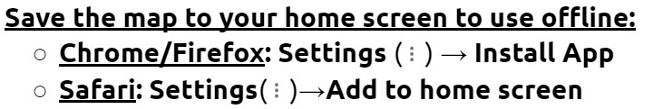

New! Use the map offline:

Use this map tool to identify sample units and specific areas within these units to deploy camera traps using the AIM Camera Trap Network survey protocol.
Sample units are identified by, and labeled with, a unique HexID number (5 or 6-digits). Tools such as the 'Zoom to current location' and 'Measuring Tool' will assist you with this task. For example, the measuring tool is helpful for ensuring that camera stations between adjacent sample units are a minimum of 800 meters apart.
Once identified, the HexID number will be used to label each location in the field and will be attached to the top of the snow stake on laminated paper. Additionally, this number and basic information will be photographed at each survey location using the camera trap.
Please use the templates provided here to construct both the snow stake labels and the camera station information sheet.